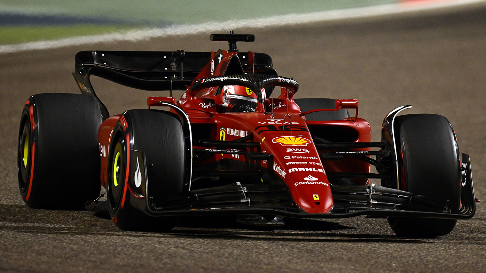

Mark Hammer
Formula 1 fanatic
Mark Hammer, or Mark for short has been a huge fan of Formula 1 since he was 12 years old. However, even
before then, grew up surrounded with the influence of the sport. His father, a huge fan since the 80's,
is a motosport photographer and big Ferrari and Gilles Villeneuve follower.
Favourite driver/team pairings
- Charles Leclerc/Ferrari
- Gilles Villeneuve/Ferrari
- Ayrton Senna/Mclaren Honda
- Alain Prost/Ferrari
- Max Vertstappen/Redbull Honda
Favourite seasons-looks wise
- 2022
- 2017
- 2016
- 2004-2008
- 1992
- 1990
- 1988
- 1983
- 1982
- 1970
- My hobbies
Work Experience
| Dates |
Work |
| 2018-2020 |
Rosebowl |
| 2020-2021 |
Architecture |
Contact Page
Contacts
Skills
| Racing |
⭐️⭐️⭐️⭐️⭐️ |
| Drawing |
⭐️⭐️⭐️ |